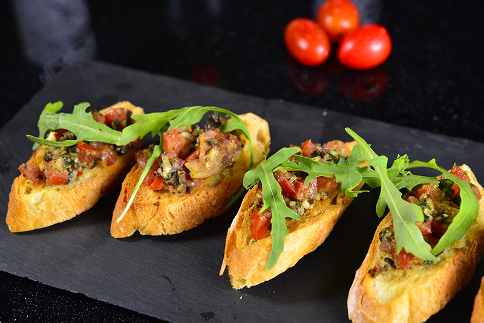
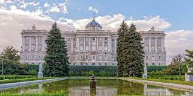

Espanha
Espanha, ou Reino da Espanha, é um país europeu localizado na Península Ibérica, a leste de Portugal.O território espanhol apresenta climas continental e mediterrâneo, sendo atravessado por uma cadeia montanhosa chamada de Sistema Central. Os Pirineus formam uma fronteira natural com a França e Andorra, a nordeste. A língua falada neste país é o espanhol.
Comida típica: Tapas españolas
Viajar para a Espanha e não saborear as tradicionais tapas españolas é o mesmo que vir para o Brasil e não experimentar a nossa feijoada.
Esse prato conta com uma infinidade de variações e é basicamente composto por porções de comidas variadas. Entre as mais conhecidas estão as patatas bravas, que são batatas fritas com molho picante, presunto cru, queijos e polvo.
Ponto turístico: Palácio Real de Madrid
Bonito por fora e por dentro o Palácio Real é um dos passeios que eu mais recomendo em Madri, uma forma de ver de pertinho uma das residências oficiais do Rei da Espanha e de caminhar por anos e anos de história em forma de objetos pomposos e muitas obras de arte.
Bonito por fora e por dentro o Palácio Real é um dos passeios que eu mais recomendo em Madri, uma forma de ver de pertinho uma das residências oficiais do Rei da Espanha e de caminhar por anos e anos de história em forma de objetos pomposos e muitas obras de arte.
A capital da Esapanha: Madrid
Madrid é a capital da Espanha, assim como a cidade espanhola que mais visitantes atrai, com mais de 10 milhões de visitantes em 2019, sendo uma das mais populares da Europa.

O motivo pelo qual o número de visitantes em Madrid aumenta a cada ano é a perfeita combinação de oferta cultural, monumental e de lazer..